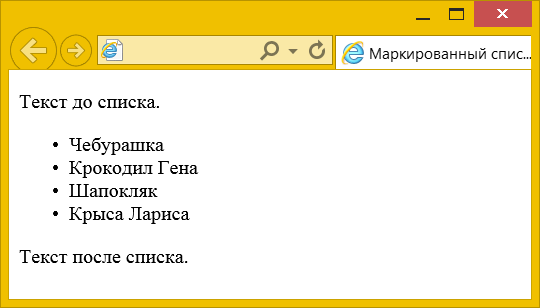
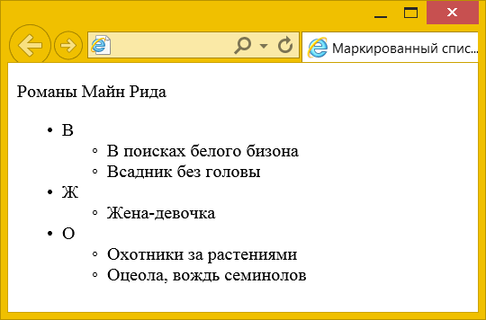
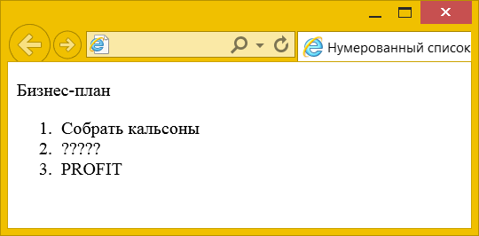
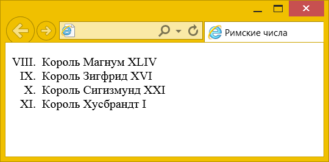
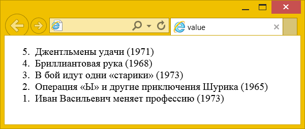
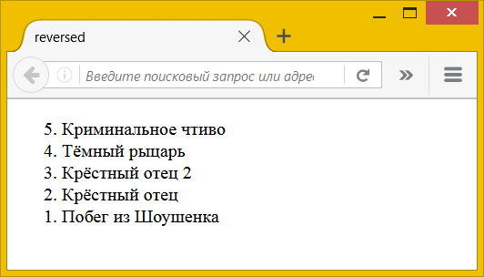
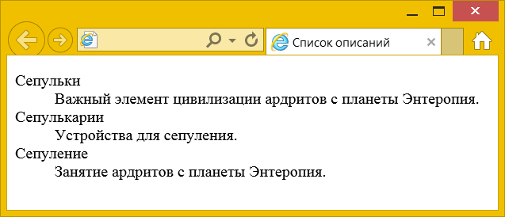

Списком называется взаимосвязанный набор отдельных фраз или предложений. Списки предоставляют возможность упорядочить и систематизировать разные данные и представить их в наглядном и удобном для пользователя виде.
В HTML существует три вида списков:
- маркированный (неупорядоченный) список;
- нумерованный (упорядоченный) список;
- список описаний.
Маркированный список
Маркированный или неупорядоченный список определяется тем, что перед каждым элементом списка добавляется небольшой маркер, обычно в виде закрашенного кружка. Сам список формируется с помощью элемента <ul> (от англ. Unordered List), а каждый пункт списка начинается с элемента <li> (от англ. List Item), как показано ниже.
<ul>
<li>Первый пункт</li>
<li>Второй пункт</li>
<li>Третий пункт</li>
</ul>В примере 1 приведён код HTML для добавления маркированного списка на веб-страницу.
Пример 1. Создание маркированного списка
<!DOCTYPE html>
<html>
<head>
<meta charset="utf-8">
<title>Маркированный список</title>
</head>
<body>
<p>Текст до списка.</p>
<ul>
<li>Чебурашка</li>
<li>Крокодил Гена</li>
<li>Шапокляк</li>
<li>Крыса Лариса</li>
</ul>
<p>Текст после списка.</p>
</body>
</html>Результат данного примера показан на рис. 1.

Рис. 1. Вид маркированного списка
Обратите внимание на отступы сверху, снизу и слева от списка. Такие отступы добавляются автоматически.
Внутри <li> не обязательно размещать только текст, это могут быть и другие элементы, вроде абзацев <p>.
<li>
<p>Айвенго</p>
<p>Локсли</p>
</li>Кроме того, один список <ul> можно вкладывать в другой, опять же, внутрь <li> (пример 2).
Пример 2. Вложенные списки
<!DOCTYPE html>
<html>
<head>
<meta charset="utf-8">
<title>Маркированный список</title>
</head>
<body>
<p>Романы Майн Рида</p>
<ul>
<li>В
<ul>
<li>В поисках белого бизона</li>
<li>Всадник без головы</li>
</ul>
</li>
<li>Ж
<ul>
<li>Жена-девочка</li>
</ul>
</li>
<li>О
<ul>
<li>Охотники за растениями</li>
<li>Оцеола, вождь семинолов</li>
</ul>
</li>
</ul>
</body>
</html>Результат данного примера показан на рис. 2.

Рис. 2. Вложенные списки
Обратите внимание, что у вложенного списка меняется вид маркеров.
Нумерованный список
Нумерованные или упорядоченные списки представляют собой набор пунктов с их порядковыми номерами. Вид и тип нумерации зависит от атрибутов элементов <ol> (от англ. Ordered List), который и применяется для создания списка. Каждый пункт нумерованного списка обозначается элементом <li>, как показано ниже.
<ol>
<li>Первый пункт</li>
<li>Второй пункт</li>
<li>Третий пункт</li>
</ol>Если не указывать никаких дополнительных атрибутов и просто написать <ol>, то по умолчанию применяется список с арабскими числами (1, 2, 3,…), как показано в примере 3.
Пример 3. Создание нумерованного списка
<!DOCTYPE html>
<html>
<head>
<meta charset="utf-8">
<title>Нумерованный список</title>
</head>
<body>
<p>Бизнес-план</p>
<ol>
<li>Собрать кальсоны</li>
<li>?????</li>
<li>PROFIT</li>
</ol>
</body>
</html>Результат данного примера показан на рис. 3.

Рис. 3. Вид нумерованного списка
Заметьте, что в нумерованном списке также добавляются автоматические отступы сверху, снизу и слева от текста.
В качестве нумерующих элементов могут выступать следующие значения:
- арабские числа (1, 2, 3, …);
- прописные латинские буквы (A, B, C, …);
- строчные латинские буквы (a, b, c, …);
- прописные римские числа (I, II, III, …);
- строчные римские числа (i, ii, iii, …).
Для указания типа нумерованного списка применяется атрибут type элемента <ol>. Его возможные значения приведены в табл. 1.
| Тип списка | Код HTML | Пример |
|---|---|---|
| Арабские числа | <ol type="1"> <li>...</li> </ol> | 1. Чебурашка 2. Крокодил Гена 3. Шапокляк |
| Прописные буквы латинского алфавита | <ol type="A"> <li>...</li> </ol> | A. Чебурашка B. Крокодил Гена C. Шапокляк |
| Строчные буквы латинского алфавита | <ol type="a"> <li>...</li> </ol> | a. Чебурашка b. Крокодил Гена c. Шапокляк |
| Римские числа в верхнем регистре | <ol type="I"> <li>...</li> </ol> | I. Чебурашка II. Крокодил Гена III. Шапокляк |
| Римские числа в нижнем регистре | <ol type="i"> <li>...</li> </ol> | i. Чебурашка ii. Крокодил Гена iii. Шапокляк |
Чтобы начать список с определённого значения, используется атрибут start элемента <ol>. При этом не имеет значения, какой тип списка установлен с помощью type, атрибут start одинаково работает и с римскими и с арабскими числами. В примере 4 показано создание списка с использованием римских цифр в верхнем регистре, начинающихся с восьми.
Пример 4. Нумерация списка
<!DOCTYPE html>
<html>
<head>
<meta charset="utf-8">
<title>Римские числа</title>
</head>
<body>
<ol type="I" start="8">
<li>Король Магнум XLIV</li>
<li>Король Зигфрид XVI</li>
<li>Король Сигизмунд XXI</li>
<li>Король Хусбрандт I</li>
</ol>
</body>
</html>Результат данного примера показан на рис. 4.

Рис. 4. Нумерованный список с римскими числами
Нумерацию можно начинать и с помощью атрибута value, который добавляется к элементу <li> следующим образом.
<li value="5">В таком случае последовательная нумерация списка прервётся и с этого пункта нумерация начнётся заново, в данном случае с пяти.
Для value есть два вполне логичных условия использования:
- значение value должно быть целым числом;
- value можно добавлять только к <li> внутри списка <ol>.
В примере 5 показано использование атрибута value для создания обратной нумерации.
Пример 5. Атрибут value
<!DOCTYPE html>
<html>
<head>
<meta charset="utf-8">
<title>value</title>
</head>
<body>
<ol>
<li value="5">Джентльмены удачи (1971)</li>
<li value="4">Бриллиантовая рука (1968)</li>
<li value="3">В бой идут одни «старики» (1973)</li>
<li value="2">Операция «Ы» и другие приключения Шурика (1965)</li>
<li value="1">Иван Васильевич меняет профессию (1973)</li>
</ol>
</body>
</html>Результат данного примера показан на рис. 5.

Рис. 5. Обратный список
Нумерованный список всегда упорядочивается по возрастающей, но в редких случаях нам надо сделать обратный отсчёт и упорядочить нумерацию по убывающей. В таком случае к <ol> можно добавить атрибут reversed, как показано в примере 6.
Пример 6. Обратный список
<!DOCTYPE html>
<html>
<head>
<meta charset="utf-8">
<title>reversed</title>
</head>
<body>
<ol reversed>
<li>Криминальное чтиво</li>
<li>Тёмный рыцарь</li>
<li>Крёстный отец 2</li>
<li>Крёстный отец</li>
<li>Побег из Шоушенка</li>
</ol>
</body>
</html>Результат данного примера показан на рис. 6.

Рис. 6. Обратный список
Атрибут reversed не поддерживается браузерами IE и Edge.
Список описаний
Список описаний состоит из двух элементов — термина и его описания. Сам список задаётся с помощью элемента <dl> (от англ. Description List), термин — элементом <dt> (от англ. Definition Term), а его описание — с помощью элемента <dd> (от англ. Description). Вложение элементов для создания списка продемонстрировано в примере 7.
Пример 7. Общая структура списка описаний
<dl>
<dt>Первый термин</dt>
<dd>Описание первого термина</dd>
<dt>Второй термин</dt>
<dd>Описание второго термина</dd>
</dl>Список описаний хорошо подходит для расшифровки терминов, создания глоссария, словаря, справочника и т. д. В примере 8 показано одно из возможных использований этого вида списка.
Пример 8. Создание списка описания
<!DOCTYPE html>
<html>
<head>
<meta charset="utf-8">
<title>Список описаний</title>
</head>
<body>
<dl>
<dt>Сепульки</dt>
<dd>Важный элемент цивилизации ардритов с планеты Энтеропия.</dd>
<dt>Сепулькарии</dt>
<dd>Устройства для сепуления.</dd>
<dt>Сепуление</dt>
<dd>Занятие ардритов с планеты Энтеропия.</dd>
</dl>
</body>
</html>Результат примера показан на рис. 7.

Рис. 7. Вид списка описаний
Как видно на картинке, текст термина прижимается к левому краю окна браузера, а описание термина располагается ниже и сдвигается вправо.